This box contains all the ncessary information necessary to specify the force field for the tip-surface interaction. The force field consists of three components: the van der Waals force, chemical short-range and long-range forces.
Presently, the vdW force is given within the plane-sphere model,
The long-range chemical component of the force, which works above
some critical vertical height  , is generally given by
the expression:
, is generally given by
the expression:
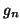
andThe short-range part of the chemical force is specified in a file on a lateral grid with respect to the direct lattice vectors of the surface,
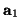
and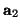
. At each grid point the force is specified for a number of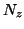
(not necessarily equidistant)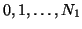
and similarly for the points along the direction, numbered as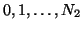
, then the force is provided for every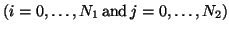
. To preserve periodicity of the lattice, the force fields for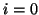
and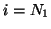
(any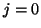
and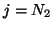
(anyTwo examples of the force field for the MgO (001) surface are given in Fig. 12
|
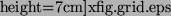 |
\X=0,Y=0,
\X=0.5305,Y=0.5305,
\X=0,Y=2.122,
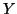
within the primitive cell as shown by the dashed lines in Fig. 12 (a). The coordinate axes are those shown in Fig. 12, and the Mg-O distance is equal to 2.122 Å. The results of the calculation for a 2D scan using either of the force field are collected in directories examples/MgO/results_5x5 and examples/MgO/results_9x9 (see also section 11.4).The information in the box is provided in the same way as in the previous case: each time a keyword is used which is followed by the necessary parameters. The order of each input is arbitrary, the order within each input is fixed.
Important: contrary to all other boxes, all values here are
provided using eV and Å units!!!
units!!!